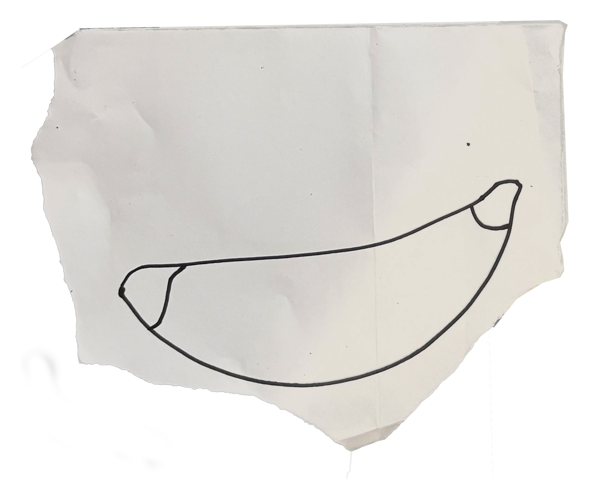
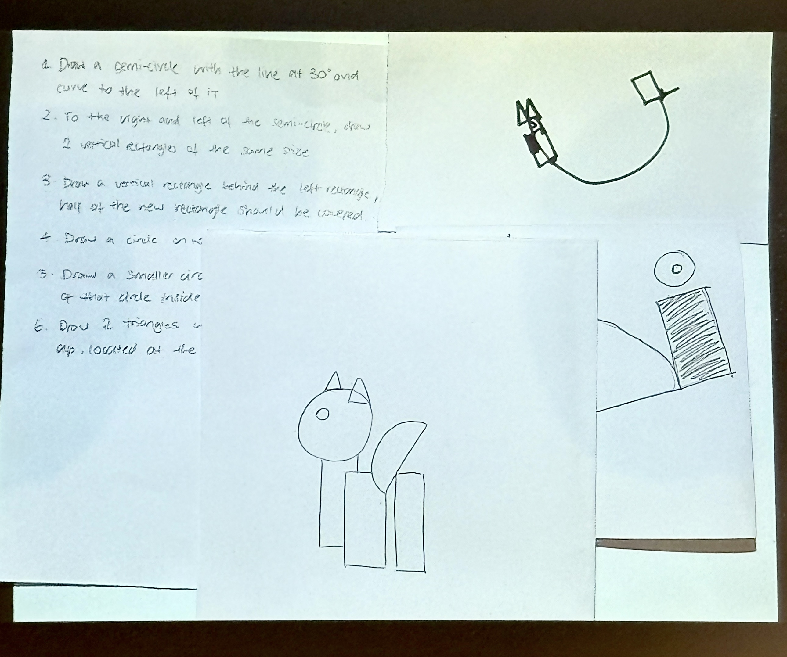
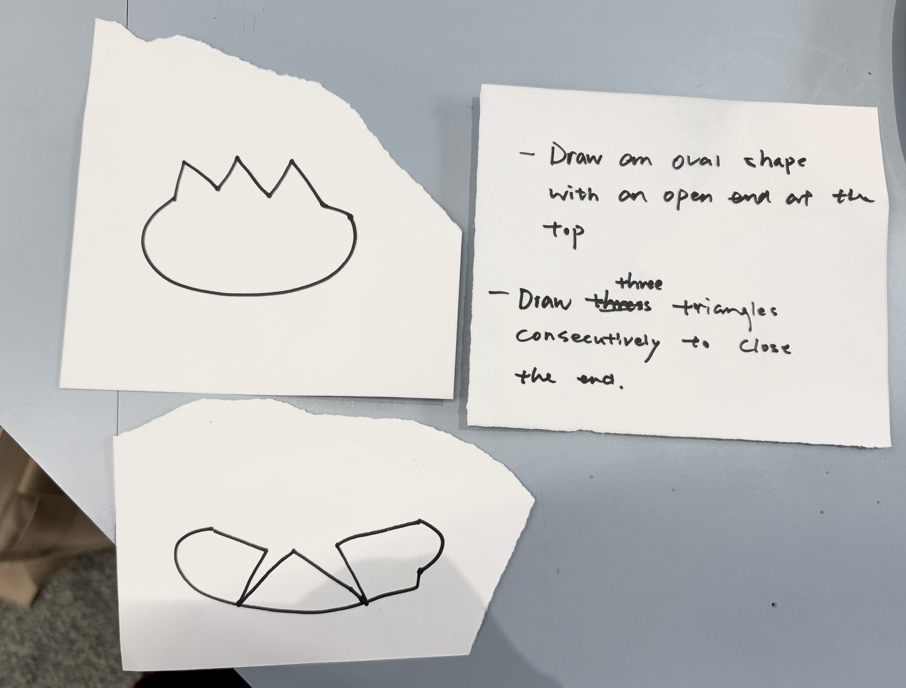
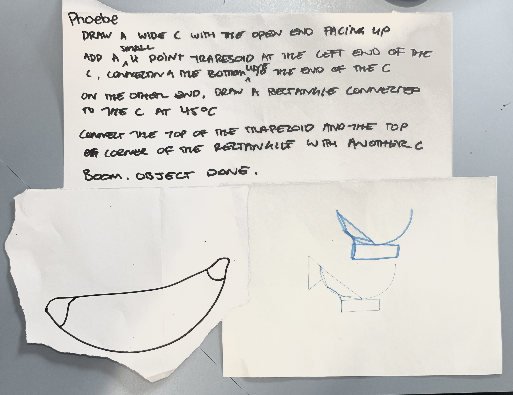

back
This activity made me realise how strongly we depend on assumptions and symbols in our communication. It was great! In this activity, we drew out simple (some not so simple) line drawings then wrote instructions on how to repeat it with geometry only. From the get-go, I thought my instructions were pretty clear, but when given to another classmate to replicate, my clear instructions were actually pretty vauge.
On the other way round, I tried a few other classmates instructions and produced very abstract results. I tried interpreting some simple instructions in different ways, and got completely lost in others. It makes me think about the curated level of specifcity made thorugh languages like Css & Html. Neat!


My 'super clear' script. I tried to get my human-computer buddy to draw a banana.
